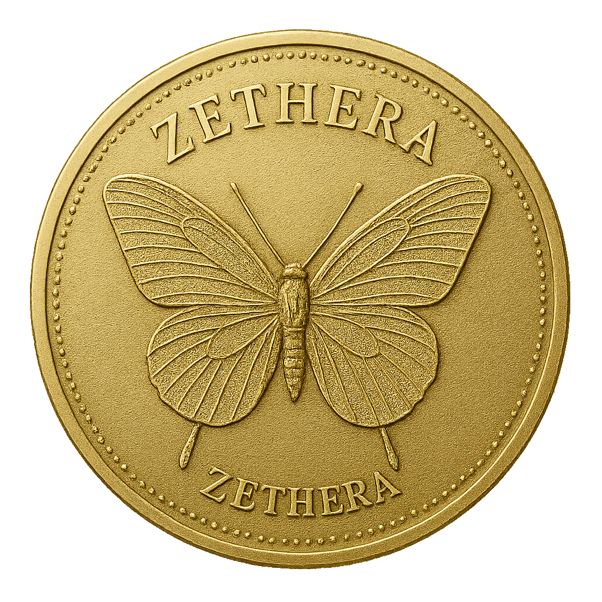

A Zethera (QZR) é um projeto cripto nativo da Binance Smart Chain, desenvolvido para unir conceito simbólico e utilidade técnica. Nossa missão é tornar acessível uma economia descentralizada de forma responsável, transparente e com base na liberdade.
| Categoria | Distribuição | Quantidade | Valor Estimado |
|---|---|---|---|
| Venda pública inicial | 35% | 14.000.000.000 QZR | €7.000.000 |
| Marketing & Parcerias | 10% | 3.500.000.000 QZR | €1.750.000 |
| Liquidez (Exchanges) | 5% | 1.750.000.000 QZR | €875.000 |
| Fundo de Desenvolvimento | 7,5% | 2.625.000.000 QZR | €1.312.500 |
| Reserva Estratégica | 7,5% | 2.625.000.000 QZR | €1.312.500 |
| Núcleo Fundacional | 30% | 10.500.000.000 QZR | €5.250.000 |
O token QZR está implementado na Binance Smart Chain com padrões BEP-20 e bibliotecas OpenZeppelin, garantindo segurança, auditabilidade e compatibilidade ampla.
